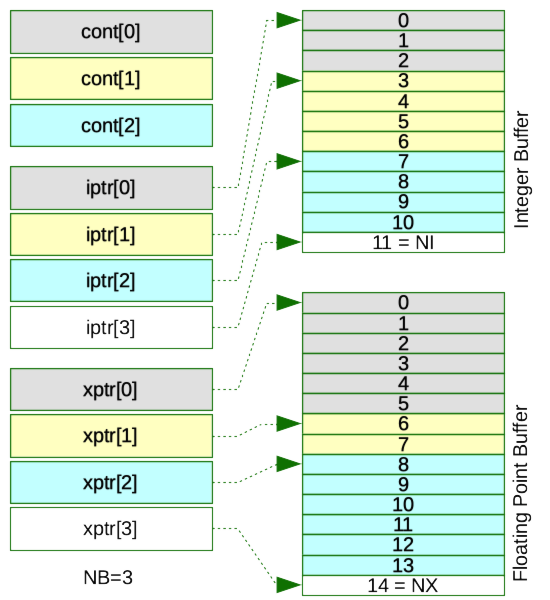

The ENDFlib library in DeCE is written in an object
oriented manner, which provides an easy access to the ENDF-6 format
files. There are three important classes defined
in endflib.h. The first class is Record that is used
for the HEAD and CONT records defined in ENDF-6. The
second one is the main ENDF class, in which numerical data in
a specific MT/MT section are stored. The last one is the dictionary
class, ENDFDict. The dictionary class is used for controlling
individual section in the ENDF-6 file to be processed, making a new
dictionary section, and access to the overall information of the
currently handling file.
A record defined in ENDF-6 is a card image that has six data fields in each eleven column - two floating point data followed by four integers. Following ENDF-6 definition, DeCE defines this data structure as:
class Record{
public:
double c1;
double c2;
int l1;
int l2;
int n1;
int n2;
};
The record-type data are used for the HEAD line in each MF/MT section, or the CONT (control) line that precedes a data block. Note that one data block may contain more than one CONT, depending on the MT/MT data structure. But at least one CONT is given in a data block, so that we use a pair of the CONT field with the data section to be a "block" of data.
All the member variables in the Record class are defined as public, and they will be zero-initialized by a constructor when no data are provided.
There is a member function setRecord() that set all six
variables at one time.
void setRecord(double a, double b, int c, int d, int e, int f){
c1 = a;
c2 = b;
l1 = c;
l2 = d;
n1 = e;
n2 = f;
}
This class is to store entire data in one MF/MT section, so that each MF/MT section in DeCE is represented by this object. The class is defined as follows:
class ENDF{
private:
bool allocated; // memory allocation flag
int mat; // ENDF MAT number
int mf; // ENDF MF number
int mt; // ENDF MT number
Record head; // Head Record
int isize; // integer data buffer size
int xsize; // double data buffer size
int rsize; // CONT data buffer size
int ctr; // pointer to currently running block
int nb; // total number of blocks
public:
int *idata; // integer data buffer
double *xdata; // floating-point (double) data buffer
int **iptr; // int pointer for the 2-dim array
double **xptr; // double pointer for the 2-dim array
Record *rdata; // CONT data buffer
};
The MAT/MF/MT triplet, which is an ID of this section, is kept in private. The HEAD record is also private. DeCE allocates three buffers in the heap memory, rdata for Rerord data, idata for integer data, and xdata for floating-point (double) data. DeCE allocates small size memory for these buffers when an object is instanced. Then the memory size will be increased automatically as needed. In case one of these buffers reaches the maximum size, which is defined in endflib.h, code will be terminated. When one see the error message too many sub-block or too many data-point, the memory limit size should be increased in endflib.h.
The two integers, NB and CTR, are hidden
variables in the class, required a method to store integer/floating
point data on memory, explained below. NB is the number of
blocks stored in an object, and CTR is a pointer to the data
block currently the program is accessing. They are used for monitoring
the total number of data points
in endflib.cpp. Apparently CTR is equal to or
smaller than NB.
Numerical data are stored in this object in a one-dimensional mode. There are three types of data stored; integer, double, and Record. The integer and double data are also accessed as a two-dimensional array. For example;
N0 N1 N2 N3 N4 N5 N6 N7 N8 N9 N10 (0,0) (0,1) (0,2) (1,0) (1,1) (1,2) (1,3) (2,0) (2,1) (2,2) (2,3)
Where, there are eleven numbers ( = ni) in the integer
array idata, and the same are accessed by a 2dim array
pointer iptr, like itpr[0][2]=N2,
iptr[2][2]=N9. The pointer itpr[0] contains the
address of idata[0].
The first index, 0, 1, and 2, is common to all the double and
Recode arrays xptr and rdata, which means that
an i-th data block has three relevant data
sets iptr[i], xptr[i], and rdata[i].
In the C(C++) notation for the case above;
iptr[0] = &idata[0]; xptr[0] = &xdata[0]; iptr[1] = &idata[3]; xptr[1] = &xdata[6]; iptr[2] = &idata[7]; xptr[2] = &xdata[8]; iptr[3] = &idata[11]; xptr[3] = &xdata[14];

The last elements (iptr[3] and xptr[3]) point the first addresses of unused memory, which is needed to calculate number of elements for the third block.
At the beginning, NB = 0, iptr and xptr
point the fisrt address of the interger number and floating
point number buffers. When data for the first block is stored
(3 integer numbers and 6 floating point numbers), iptr[1]
is set at the 4th element in the integer buffer (idata[3]), and xptr[1]
points the 7th (xdata[6]). The number of elements can be
calculated by the pointers, NI = iptr[NB] - iptr[0],
and NX = xptr[NB] - xptr[0].
Sometimes there is no corresponding int/floating point data block
for a given i, while the CONT record always exists. When
the i-th block does not have any data, iptr[i] and xptr[i]
point the same address as iptr[i-1] and xptr[i-1].
The MAT/MF/MT triplet as well as the HEAD record can be accessed by
member functions. The setENDFhead() function resets the
counter CTR. This is function should be called first, when a
new section is created.
void setENDFmat(int n){ mat = n; }
void setENDFmf (int n){ mf = n; }
void setENDFmt (int n){ mt = n; }
int getENDFmat() { return mat; }
int getENDFmf () { return mf; }
int getENDFmt () { return mt; }
void setENDFhead(double c1, double c2, int l1, int l2, int n1, int n2){
head.setRecord(c1,c2,l1,l2,n1,n2);
resetCTR();
}
void setENDFhead(Record r){
head = r;
resetCTR();
}
Record getENDFhead(){
return head;
}
class ENDFDict{
private:
int mat; // ENDF MAT number
int sec; // number of sections
Record head; // Tape HEAD Record
Record cont[3]; // CONT Records
char *cbuf; // buffer for TEXT lines and TPID
bool stdheader; // flag for standard header
public:
int *mf; // ENDF MF number
int *mt; // ENDF MT number
int *nc; // Line count
int *mod; // MOD number
int *id; // ID for ENDF data on memory
char *tpid; // Tape ID
Record *text]5]; // text data field
double emaxRR; // energy boundary of resolved resonance region
double emaxUR; // energy boundary of unresolved resonance region
double emaxRe; // either emaxRR or emaxUR depending on LSSF flag
};
An object of ENDFDict class contains MAT number mat, Tape
ID tpid, Tape header part (one HEAD, three CONTs, and five
lines of text fields) head, cont, total number of
sections sec, and integer data arrays for each section
mf, mt, nc, mod, and id. nc is the number of
lines (in card image).
emaxRR, emaxUR, and emaxRe define the energy
boundary between the resolved, unresolved resonances, and higher
range. The array id has special meanings, as given
below.
In DeCE, one object is assigned to each section of an ENDF-6 file defined by MF/MT. For example, when sections are given in
ENDF lib[0]; // comment section MF=1, MT=451
ENDF lib[1]; // resonance parameters MF=2, MT=151
ENDF lib[2]; // total cross section MF=3, MT=1
ENDF lib[3]; // elastic cross section MF=3, MT=2
ENDF lib[4]; // capture cross section MF=3, MT=102
// elastic, no data MF=4, MT=2
// spectrum, no data MF=6, MT=102
The total number of sections, sec is 7, and 5 sections out
of 7 have real data on memory. The rest of two sections are in the
dictionary, but DeCE has not allocated memory to store these
sections. DeCE gives -1 to their ids.
The arrays of mf, mt,
and id may contain,
index MF MT ID 0 1 451 0 1 2 151 1 2 3 1 2 3 3 2 3 4 3 102 4 5 4 2 -1 6 6 102 -1
When one section is deleted, DeCE keeps this section on memory, but
set id = -2. Now we delete MF/MT=3/2 and 4/2, and add a new
section MF/MT=3/3 to which memory is allocated. sec becomes
8. The index for the new section will be 7, and the id is
5.
ENDF lib[5]; // nonelastic cross section MF=3, MT=3
index MF MT ID 0 1 451 0 1 2 151 1 2 3 1 2 3 3 2 -2 4 3 102 4 5 4 2 -2 6 6 102 -1 7 3 3 5
Finally DeCE prints out sections whose id are positive,
in the ascending order of MF and MT.
Two member functions, scanDisc() and getID(),
give status of each data block.
int scanDict(int n1, int n2){
int k = -1;
for(int i=0 ; i<sec ; i++){
if( (mf[i] == n1) && (mt[i] == n2) ){ k = i; break; }
}
return(k);
}
int getID(int n1, int n2){
int k = -1;
for(int i=0 ; i<sec ; i++){
if( (mf[i] == n1) && (mt[i] == n2) ){ k = id[i]; break; }
}
return(k);
}
scanDict() looks up a given MF/MT in the dictionary, and
if that section is found, it returns its index, otherwise -1. In the
case of example above, scanDict(3,3) gives 7.
getID() is similar to scanDict(), but it returns
the id of given section. scanDict(3,3) is 5.